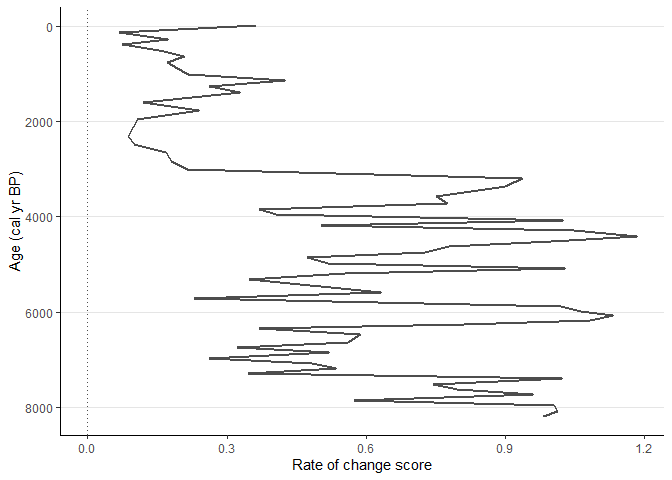

Current version: 0.6.1.
What is new in the package? See NEWS
Description
R-Ratepol is an R package for estimating rate of change (RoC) from community data in time series.
Reference: Ondřej Mottl, John-Arvid Grytnes, Alistair W.R. Seddon, Manuel J. Steinbauer, Kuber P. Bhatta, Vivian A. Felde, Suzette G.A. Flantua, H. John B. Birks. (2021) Rate-of-change analysis in palaeoecology revisited: a new approach. Review of Palaeobotany and Palynology 293, doi:
https://doi.org/10.1016/j.revpalbo.2021.104483
R-Ratepol is written as an R package and includes a range of possible settings including a novel method to evaluate RoC in a single stratigraphical sequence using assemblage data and age uncertainties for each level. There are multiple built-in dissimilarity coefficients (DC) for different types of assemblage data, and various levels of data smoothing that can be applied depending on the type and variance of the data. In addition, R-Ratepol can use randomisation, accompanied by use of age uncertainties of each level and taxon standardisation to detect RoC patterns in datasets with high data noise or variability (i.e. numerous rapid changes in composition or sedimentation rates).
The computation of RoC in R-Ratepol is performed using the following steps:
Assemblage and age-model data are extracted from the original source and should be compiled together, i.e. depth, age, variable (taxon) 1, variable (taxon) 2, etc.
(optional) Smoothing of assemblage data: Each variable within the assemblage data is smoothed using one of five in-built smoothing methods: none (
smooth_method = "none"), Shepard’s 5-term filter (smooth_method = "shep"; Davis, 1986; Wilkinson, 2005), moving average (smooth_method = "m.avg"), age-weighted average (smooth_method = "age.w"), Grimm’s smoothing (smooth_method = "grim"; Grimm and Jacobson, 1992).Creation of time bins: A template for all time bins in all window movements is created.
A single run (an individual loop) is computed:
(optional) Selection of one time series from age uncertainties (see section 2.1.1.2. on randomisation)
Subsetting levels in each bin: Here the working units (WU) are defined
(optional) Standardisation of assemblage data in each WU
Calculation of RoC between WUs: RoC is calculated as the dissimilarity coefficient (DC) standardised by age differences between WUs. Several in-built dissimilarity coefficients are available: Euclidean distance (
DC = "euc), standardised Euclidean distance (DC = "euc.sd), Chord distance (DC = "chord), Chi-squared coefficient (DC = "chisq; Prentice, 1980), Gower’s distance (DC = "gower; Gower, 1971), Bray-Curtis(DC = "bray). The choice of DC depends on the type of assemblage data. In addition, RoC between WUs be calculated using every consecutive WU (only_subsequent = FALSE), or alternatively, calculation of RoC can be restricted to only directly adjacent WUs (only_subsequent = TRUE). Using the former increases the number of samples for which RoC can be calculated within a sequence, which varies in terms of sample resolution, but may still introduce biases related to the RoC estimation as a result of the varying inter-sample distances.The summary of a single run is produced based on all moving windows
Step 4 is repeated multiple times (e.g. 10,000 times).
Validation and summary of results from all runs of RoC calculation are produced.
(Optional) Data beyond a certain age can be excluded.
Detection and validation of significant peak-points. There are five in-built methods to detect significant peak-points: Threshold (
method = "threshold), Linear trend (method = "trend_linear), Non-linear trend (method = "trend_non_linear), first derivative of a generalised additive model (method = "GAM_deriv; f-deriv GAM; Simpson, 2018), and Signal-to-Noise Index (method = "SNI; Kelly et al., 2011).
Selection of working units
RoC is calculated between consecutive Working Units (WU). Traditionally, these WUs represent individual stratigraphical levels. However, changes in sedimentation rates and sampling strategies can result in an uneven temporal distribution of levels within a time sequence, which in turn makes the comparison of RoC between sequences problematic. There are various methods that attempt to minimise such problems. The first is interpolation of levels to evenly spaced time intervals, and the use of the interpolated data as WUs. This can lead to a loss of information when the density of levels is high. Second is binning of levels: assemblage data are pooled into age brackets of various size (i.e. time bins) and these serve as WUs. Here, the issue is a lower resolution of WUs and their uneven size in terms of total assemblage count (bins with more levels have higher assemblage counts). Third is selective binning: like classical binning, bins of selected size are created, but instead of pooling assemblage data together, only one level per time bin is selected as representative of each bin. This results in an even number of WUs in bins with a similar count size in the assemblage. However, the issue of low resolution remains. Therefore, we propose a new method of binning with a moving window, which is a compromise between using individual levels and selective binning. This method follows a simple sequence: time bins are created, levels are selected as in selective binning, and RoC between bins is calculated. However, the brackets of the time bin (window) are then moved forward by a selected amount of time (Z), levels are selected again (subset into bins), and RoC calculated for the new set of WUs. This is repeated X times (where X is the bin size divided by Z) while retaining all the results. R-Ratepol currently provides several options for selecting WU, namely as individual levels (Working_Units = "levels"), selective binning of levels (Working_Units = "bins"), and our new method of binning with a moving window (Working_Units = "MW"), which is summarised in figure.

Randomisation
Due to the inherent statistical errors in uncertainties in the age estimates from age-depth and the assemblage datasets (e.g. pollen counts in each level; Birks and Gordon, 1985), R-Ratepol can be run several times and the results summarised (Steps 5-6). Therefore, two optional settings are available by using age uncertainties and assemblage data standardisation.
Age uncertainties (Step 4a)
For each run, a single age sequence from the age uncertainties is randomly selected. The calculation between two consecutive WUs (i.e. one working-unit combination) results in a RoC score and a time position (which is calculated as the mean age position of the two WUs). However, due to random sampling of the age sequence, each WU combination will result in multiple RoC values. The final RoC value for a single WU combination is calculated as the median of the scores from all randomisations. In addition, the 95th quantile from all randomisations is calculated as an error estimate.
Detection of peak-points in RoC sequence (Step 8)
A rapid change in composition or relative abundances of variables within the sequence can provide a means of comparing RoC between sequences and interpreting the potential drivers of assemblage change. To detect such significant peak-points of RoC scores in each sequence, each point is tested to see if it represents a significant increase in RoC values. There are various ways to detect peak-points in a time series and R-Ratepol is able to detect peak-points using five methods:
Threshold (
method = "threshold): Each point in the RoC sequence is compared to a median of all RoC scores from the whole sequence (i.e. threshold value). The ROC value for a point is considered significant if the 95th quantile of the RoC scores from all calculations is higher than the threshold value.Linear trend (
method = "trend_linear): A linear model is fitted between the RoC values and their ages. Differences between the model and each point are calculated (residuals). The standard deviation (SD) is calculated from all the residuals. A peak is considered significant if it is 1.5 SD higher than the model (sd_threshold = 1.5).Non-linear trend (
method = "trend_non_linear): A conservative generalised additive model (GAM) is fitted through the RoC scores and their ages (GAM= RoC ~ s(age,k=3) using the mgcv package (Wood, 2011). The distance between each point and the fitted value is calculated (residuals). The standard deviation (SD) is calculated from all the residuals. A peak is considered significant if it is 1.5 SD higher than the model (sd_threshold = 1.5).F-deriv GAM (
method = "GAM_deriv): A smooth GAM model is fitted to the RoC scores and their ages (GAM= RoC ~ s(age). The first derivative as well as continuous confidence intervals are calculated from the model using the gratia package (Simpson, 2019). A peak is considered significant if the confidence intervals of the first derivative differ from 0 (for more information see Simpson, 2018).Signal-to-noise method (
method = "SNI): We adapted SNI from Kelly et al. (2011), which was developed to detect changes in charcoal stratigraphical records. SNI is calculated for the whole RoC sequence and a peak-point is considered significant if it has an SNI value higher than 3.
Examples
For more detailed example, see Materials for Seminar Day of PalaeoSIG: Data Manipulation & Statistical Analysis in Palaeoecology
Example data
Pollen data from four European sequences the Neotoma database (Goring et al., 2015) were obtained. Taxa were standardised to the taxonomically highest pollen morphotype (Level = MHVar2) using the pollen harmonisation table in Giesecke et al. (2019).
Age-depth models were developed using the pre-selected radiometric control points provided in Giesecke et al. (2014) and calibrated the radiocarbon dates using the IntCal13 Northern Hemisphere calibration curve (Reimer et al., 2013). For each sequence, an age-depth model was constructed using the Bchron R package (Haslett & Parnell, 2008) to generate 1000 possible age predictions (i.e. age uncertainties) for all levels. We calculated the median of all the uncertainties for each level to give the most probable age (default age) in calibrated years before present (cal yr BP, where 0 = 1950 CE).
In each sequence, we excluded all levels that contained less than 150 pollen grain counts of the terrestrial taxa, and all levels beyond a 3000-years extrapolation of the oldest chronological control point. In addition, we excluded all levels with an age older than 8500 cal yr BP to focus on the period of most substantial human impact.
library(RRatepol)
library(tidyverse)
example_data <-
RRatepol::example_data
glimpse(example_data)
#> Rows: 4
#> Columns: 7
#> $ dataset.id <chr> "4012", "40951", "45314", "17334"
#> $ collection.handle <chr> "DALLICAN", "STEERMOS", "KILOALA", "GL"
#> $ lat <dbl> 60.38736, 47.80567, 67.96611, 53.00735
#> $ long <dbl> -1.096480, 8.200150, 20.460278, -6.348035
#> $ pollen_data <list> [<tbl_df[63 x 51]>], [<tbl_df[273 x 104]>], [<tbl_df~
#> $ sample_age <named list> [<data.frame[63 x 3]>], [<data.frame[273 x 3]>], [<d~
#> $ age_uncertainty <named list> <<matrix[1000 x 63]>>, <<matrix[1000 x 273]>>, <<mat~
example_data %>%
ggplot2::ggplot(
ggplot2::aes(
x = long,
y = lat)) +
borders(
fill = "gray90",
colour = NA) +
geom_point(
shape = 0,
size = 2) +
geom_point(
shape = 20,
size = 2) +
coord_quickmap(
xlim = c(-10, 25),
ylim = c(47, 70)) +
labs(
x = "Longitude",
y = "Latitude") +
theme_classic()
Example 1
Estimate RoC values for Dallican Water site using Age-weighed smoothing of the data and Chord dissimilarity coefficient. Pollen data will not standardised to a certain pollen count and age uncertainties from Bchron will not be used.
sequence_01 <-
RRatepol::fc_estimate_RoC(
data_source_community = example_data$pollen_data[[1]],
data_source_age = example_data$sample_age[[1]],
age_uncertainty = FALSE,
smooth_method = "shep",
DC = "chisq",
Working_Units = "levels",
standardise = FALSE,
rand = 1)
RRatepol::fc_plot_RoC_sequence(sequence_01, Peaks = F, trend = F)
Example 2
Now try to standardise pollen data in each sample to a maximum of 150 pollen grains and use age uncertainties from age-depth model. Process will be repeated 1000 times on multiple cores using parallel package. This will produce error wrapper showing 95th percent quantile.
sequence_02 <-
RRatepol::fc_estimate_RoC(
data_source_community = example_data$pollen_data[[1]],
data_source_age = example_data$sample_age[[1]],
age_uncertainty = example_data$age_uncertainty[[1]],
smooth_method = "shep",
DC = "chisq",
Working_Units = "levels",
standardise = TRUE,
N_individuals = 150,
rand = 1000,
treads = TRUE)
RRatepol::fc_plot_RoC_sequence(
data_source = sequence_02,
Peaks = FALSE,
trend = FALSE)
Example 3
Use Binning with the mowing window approach with bin_size = 500 and Number_of_shifts = 5.
sequence_03 <-
RRatepol::fc_estimate_RoC(
data_source_community = example_data$pollen_data[[1]],
data_source_age = example_data$sample_age[[1]],
age_uncertainty = example_data$age_uncertainty[[1]],
smooth_method = "shep",
DC = "chisq",
Working_Units = "MW",
bin_size = 500,
Number_of_shifts = 5,
standardise = TRUE,
N_individuals = 150,
rand = 1000,
treads = TRUE)
RRatepol::fc_plot_RoC_sequence(
data_source = sequence_03,
Peaks = FALSE,
trend = FALSE)
References
Birks, H.J.B., Gordon, A.D., 1985. Numerical Methods in Quaternary Pollen Analysis. Academic Press, London.
Davis, J.C., 1986. Statistics and Data Analysis in Geology, 2nd edn. ed. J. Wiley & Sons, New York.
Gower, J.C., 1971. A general coefficient of similarity and some of its properties. Biometrics 27, 857–871.
Grimm, E.C., Jacobson, G.L., 1992. Fossil-pollen evidence for abrupt climate changes during the past 18000 years in eastern North America. Clim. Dyn. 6, 179–184.
Kelly, R.F., Higuera, P.E., Barrett, C.M., Feng Sheng, H., 2011. A signal-to-noise index to quantify the potential for peak detection in sediment-charcoal records. Quat. Res. 75, 11–17. https://doi.org/10.1016/j.yqres.2010.07.011
Prentice, I.C., 1980. Multidimensional scaling as a research tool in Quaternary palynology: A review of theory and methods. Rev. Palaeobot. Palynol. 31, 71–104. https://doi.org/10.1016/0034-6667(80)90023-8
Simpson, G.L., 2019. gratia: graceful’ggplot’–based graphics and other functions for GAMs fitted using “mgcv.” R Packag. version 0.2–1.
Simpson, G.L., 2018. Modelling palaeoecological time series using generalised additive models. Front. Ecol. Evol. 6, 1–21. https://doi.org/10.3389/fevo.2018.00149
Wilkinson, L., 2005. The Grammar of Graphics. Springer-Verlag, New York, USA 37. https://doi.org/10.2307/2669493 Wood, S.N., 2011. Fast stable restricted maximum likelihood and marginal likelihood estimation of semiparametric generalized linear models. J. R. Stat. Soc. Ser. B Stat. Methodol. 73, 3–36. https://doi.org/10.1111/j.1467-9868.2010.00749.x